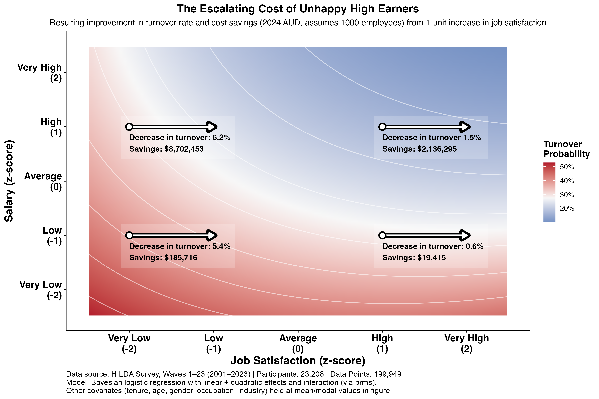

In my post last week, we quantified the ROI of investing in job satisfaction, showing that an organisation of 1,000 employees can save over $4m per annum in turnover costs simply by improving staff satisfaction.
But it raised another question: What about salary?
Intuitively, we assume higher pay buys loyalty ("Golden Handcuffs"). But higher pay also increases the cost of turnover when it does occur (recruitment fees, lost productivity, and onboarding are all tied to salary).
To understand the trade-off, we went back to the HILDA data (23,000+ workers, 2001-2023) to model the interaction between income and satisfaction. We compared investments in job satisfaction in four scenarios, ranging from low-paid/dissatisfied to high-paid/highly-satisfied. We again assumed an organisation of 1000 employees where the cost of replacing an employee is 1x their annual salary.
Here is what we found (see figure below):

1. Salary doesn't compensate for deep dissatisfaction.
The top-left corner of this chart tells a worrying story. While higher pay reduces turnover risk overall, if job satisfaction is "Very Low," this protection is minimal. Even at very high income levels, if an employee is miserable, turnover probability remains stubbornly high (27–30%). You cannot simply pay people to endure.
2. The highest ROI is in high-paid, dissatisfied employees.
The financial case for intervention is strongest for the unhappy high-earners. This is for two reasons:
- The "Lift" is larger: Improving satisfaction for this group actually produces the sharpest drop in turnover probability (a 6.2% reduction vs 5.4% for unhappy, low earners).
- The Cost is higher: Because replacing a high-earner costs significantly more, preventing a single exit saves hundreds of thousands of dollars.
To achieve the same improvement in turnover among this group without improving job satisfaction, you'd need to pay each employee an extra $105k per annum. That's over $100m for our 1000-employee organisation. An investment in job satisfaction would come at a fraction of the cost.
And these figures are conservative. In reality, replacing senior, high-paid employees often costs 1.5–2x their annual salary (not the 1x we modelled here), which means the true ROI of investing in dissatisfied high-earners is even higher.
So paying employees more doesn't reduce the need for leaders to ensure employees are satisfied, it just raises the stakes of getting it wrong.